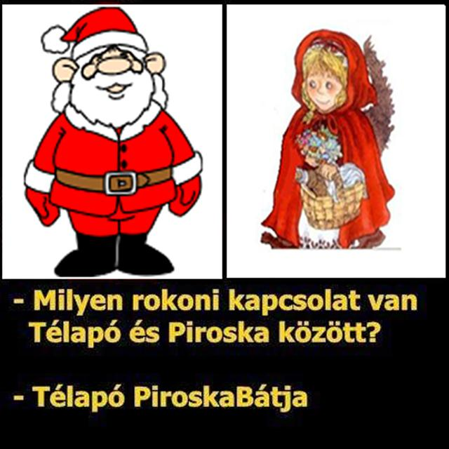

Kezdőlap
Kívánság
Rajzok
Mikulás kezdőlap
Üdv a weboldalon, ahol mindent megtudhatsz a mikulásról!

Próbáld ki népszerű mikulásos játékunkat!
Mennyi van még hátra?
Ide kattintva megtudhatod, hogy
mennyi idő van még karácsonyig!